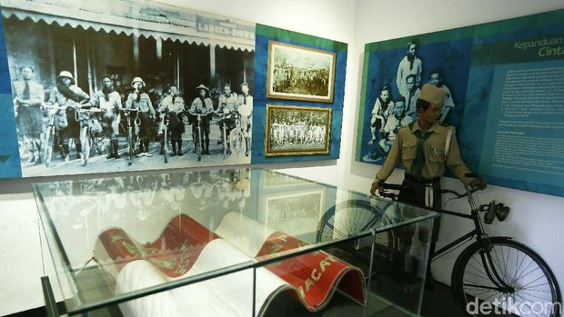
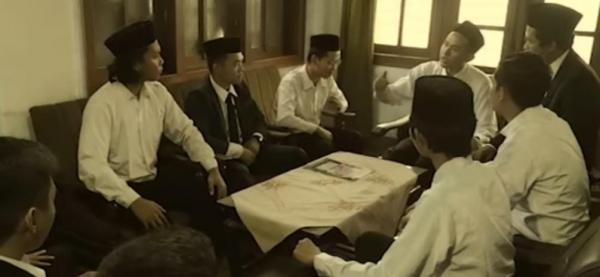

Sumpah Pemuda adalah satu tonggak utama dalam sejarah pergerakan kemerdekaan Indonesia. Ikrar ini dianggap sebagai kristalisasi semangat untuk menegaskan cita-cita berdirinya negara Indonesia.
Gedung Museum memperingati Kongres Pemuda II
Lukisan di Jakarta pada tahun 1985 dalam rangka memperingati Hari Sumpah Pemuda
Sumpah Pemuda adalah keputusan Kongres Pemuda Kedua yang diselenggarakan dua hari, 27—28 Oktober 1928 di Batavia (kini bernama Jakarta). Keputusan ini menegaskan cita-cita akan "tanah air Indonesia", "bangsa Indonesia", dan "bahasa Indonesia". Keputusan ini diharapkan menjadi asas bagi setiap perkumpulan kebangsaan Indonesia dan agar disiarkan dalam berbagai surat kabar dan dibacakan di muka rapat perkumpulan-perkumpulan.
Delegasi pemuda Jawa (Jong Java)
Istilah "Sumpah Pemuda" sendiri tidak muncul dalam putusan kongres tersebut, melainkan diberikan setelahnya. Berikut ini adalah bunyi tiga keputusan kongres tersebut sebagaimana tercantum pada prasasti di dinding Museum Sumpah Pemuda. Naskah orisinil diabadikan menggunakan ejaan Van Ophuijsen.
Sejarah Sumpah Pemuda

Sejarah Sumpah Pemuda – Sumpah Pemuda merupakan tonggak penting dalam sejarah pergerakan kemerdekaan Indonesia. Janji ini dilihat sebagai kristalisasi dari semangat penegasan cita-cita hari berdirinya negara Indonesia.
Latar belakang Sumpah Pemuda
Latar belakang munculnya Sumpah Pemuda sebenarnya muncul dari gagasan penyelenggaraan Kongres Pemuda Kedua yang berasal dari Perhimpunan Pelajar Pelajar Indonesia (PPPI). Diketahui bahwa PPPI merupakan sebuah organisasi pemuda yang anggotanya merupakan para pelajar dari seluruh indonesia. Atas inisiatif PPPI, kongres dilaksanakan di tiga gedung yang berbeda dan dibagi dalam tiga kali rapat. Sehingga menghasilkan Sumpah Pemuda yang kita kenal selama ini.
Rapat pertama dalam Kongres Pemuda ini dilakukan pada Sabtu, 27 Oktober 1928, di Gedung Katholieke Jongenlingen Bond (KJB), Lapangan Banteng. Dilansir dari laman Museum Sumpah Pemuda, acara dibuka dengan sambutan dari Soegondo. Dalam sambutannya, Soegondo berharap kongres ini dapat memperkuat semangat persatuan dalam sanubari para pemuda
Setelah itu, cara dilanjutkan dengan uraian Mohammad Yamin tentang arti dan hubungan persatuan dengan pemuda. Menurutnya, ada lima faktor yang bisa memperkuat persatuan Indonesia yaitu sejarah, bahasa, hukum adat, pendidikan, dan kemauan.
Selanjutnya, Rapat kedua dilakukan pada keesokan harinya pada Minggu, 28 Oktober 1928, di Gedung Oost-Java Bioscoop. Dalam rapat kedua ini, kongres membahas mengenai pendidikan.
Poernomo Woelan dan Sarmidi Mangoensarkoro keduanya berpendapat bahwa anak harus mendapat pendidikan kebangsaan, sementara itu harus ada keseimbangan antara pendidikan di sekolah dan di rumah. Anak juga harus dididik secara demokratis.
Selanjutnya pada rapat ketiga, Soenario menjelaskan pentingnya nasionalisme dan demokrasi selain gerakan kepanduan. Sedangkan Ramelan mengemukakan bahwa gerakan kepanduan tidak bisa dipisahkan dari pergerakan nasional. Gerakan kepanduan sejak dini mendidik anak-anak disiplin dan mandiri, itu merupakan hal-hal yang dibutuhkan dalam perjuangan.
Setelah itu, diperdengarkan lagu "Indonesia" oleh Wage Rudolf Supratman. Lagu tersebut disambut dengan sangat meriah oleh peserta kongres. Selanjutnya Kongres ditutup dengan mengumumkan rumusan hasil kongres. Oleh para pemuda yang hadir, rumusan itu diucapkan sebagai Sumpah Setia yang kita kenal sekarang sebagai Sumpah Pemuda.
Tujuan Sumpah Pemuda

Sumpah Pemuda bertujuan untuk mewujudkan cita-cita semua perkumpulan pemuda Indonesia yang bersatu demi Indonesia merdeka. Sebelum dirumuskan ke dalam Sumpah Pemuda, angkatan muda di tahun 1928 masih terbagi ke dalam berbagai organisasi pemuda yang bersifat kedaerahan. Organisasi-organisasi pemuda ini seperti Tri Koro Darmo (Jong Java), Jong Sumatranen Bond, Jong Minahasa, Jong Celebes, Jong Batak, Jong Ambon, dan sebagainya. Para anggota organisasi tersebut menemukan berbagai persamaan. Mereka kemudian memiliki cita-cita untuk menyatukan organisasi pemuda yang bersifat kedaerahan menjadi satu organisasi yang bersifat nasional.
Untuk menyatukan organisasi-organisasi pemuda, Kongres Pemuda I diselenggarakan pada 1926. Kemudian disusul Kongres Pemuda II pada 1928. Kongres Pemuda II yang dilaksanakan pada 27-28 Oktober 1928 menghasilkan tiga ikrar yang disebut Sumpah Pemuda. Peristiwa Sumpah Pemuda pada 28 Oktober 1928 menjadi momentum para pemuda dari berbagai organisasi kepemudaan daerah bersatu dan berjuang menuju Indonesia merdeka. Tujuan lain dari Sumpah Pemuda adalah memperkuat kesadaran akan kebangsaan dan memperteguh semangat persatuan Indonesia. Sumpah Pemuda juga membuat masyarakat mengenal istilah satu Tanah Air, satu bangsa, dan satu bahasa, yaitu Indonesia.